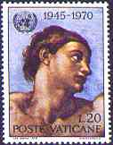
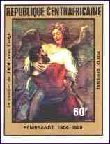
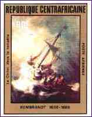
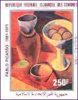
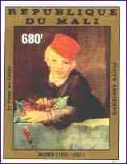
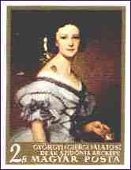
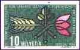
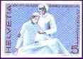
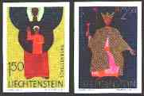
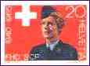

|
 |
ABOUT IMPERFORATED STAMPS AND SHEETS |
|
|
 |
ABOUT IMPERFORATED STAMPS AND SHEETS |
|
 |
 |
 |
 |
The stamps of France, from 1940 onward, and of its former colonies ("French Speaking Countries") exist as imperforates. The quantities were small (for France issues officially 20 sheets, ranging from 25 to 100 subjects) and the stamps were sold (till about 1996) at high prices, usually through a subscription process. Being the first sheets printed, the colors of these imperfs are very vivid.
 |
Hungary started en
masse with imperfs on August 1st, 1950. They were sold for export to
five time the export prices for the perforated stamps and to Hungarian stamp collectors at ten times
the face value. This way the Hungarian P.A. assured its monopoly,
by preventing the home collectors to trade these stamps with their
foreign colleagues. Till 1957 the Hungarian imperfs were not valid for
postage.
The Romanian P.A. issued in the 70th and 80th an
important number of imperforated topical souvenir sheets (not shown),
that were officially sold only outside
the country. As result, the Romanian stamp collectors could get some
stamps issued by their country
only from foreigners (what wasn't actually possible either, because the
possession of foreign currency, necessary to buy them, was prohibited).
 |
 |
 |
 |
The imperfs from Switzerland and Liechtenstein, shown above, are quite bizarre. The problem is that the respective postal administrations have never announced them and consequently they shouldn't exist at all. Manufacturing errors cannot be excluded, of course, but too many of such stamps suddenly appeared on the market, all being offered at very high prices. Taken as example, the last two values of the Liechtenstein 1967-1971 series Patron Saints (see above, Scott 440-441) are offered for CHF 1500 (about $1000). The dealer who offers them writes: "At time these stamps are unique". Of course this "at time" is not very reassuring... The Scott catalogue value of the same stamps, but perforated, is $2.35 only. The stamps were printed by a Swiss (as opposed to a banana's republic) printing office, Courvoisier SA, enjoying an excellent reputation. I'll quote from a short article of Kurt Waltert (SBZ 1/2000, p.20), appeared after this column was published: "...I will not omit the fact that the mentioned stamps (imperfs), that are labeled as samples, essays, etc., were brought on the market by disloyal functionary... It would be of general interest to know how many of such imperfs arrived in the possession of different persons or on the stamps market."
Obviously such politics undermine the trust of stamp collectors in their postal authorities and adversely affect the stamp collecting, thought as a nice, a joyful, and also as a serious hobby.
Are you eventually interested in the real value of some modern FDCs? Then click here, please.
Notice: The imperforates should not be mistaken for "perfins", which are stamps punched with "perforated initials" or designs of holes that stand for letters, numbers or symbols. Perfins are normally used by business or government offices to discourage pilferage or misuse of stamps by employees. Perfins may be either privately or officially produced. Although they are less and less used by both business companies and government offices, because of the increasing use of franking machines, they are still in circulation in many countries.
Do you like this article? Or on the contrary do you have serious objections? Make use of PASIC Forum to express your opinion or send an e-mail to its author.
| First
version: 9/22/99. Revised:
12/04/08. Copyright © 1999 - 2000 by Victor Manta, Switzerland. All rights reserved in all countries. |
|
||